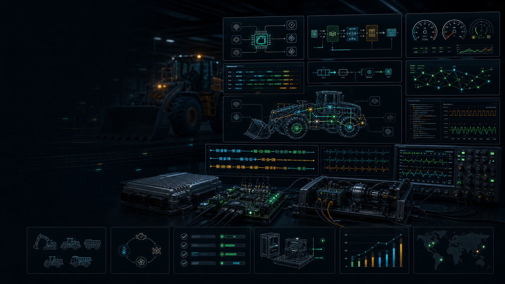

Chase Timing To The Edge
A control loop is only trustworthy when the schedule, queueing path, driver behavior, and bus timing all match what the machine needs.
Embedded Software Engineer 3
I build embedded control software across Embedded C, C++17, MATLAB/Simulink, RTOS targets, embedded Linux, CAN/J1939, Ethernet diagnostics, board bring-up, and HIL/SIL validation for machine platforms where timing and reliability have to be proven.

end-to-end control latency reduction
HIL/SIL regression coverage reached
faster root cause analysis across control faults
uptime across production machine lines
Control Stack
Control intent, machine behavior, traceability, FMEA inputs, test plans, and safety constraints.
MATLAB/Simulink model-based algorithms, state logic, calibration points, and simulation scenarios.
Embedded C/C++ modules, MISRA-aware structure, lock-free queues, IPC, NVM, and unit tests.
Task scheduling, real-time control loops, multithreading, sub-millisecond paths, and latency budgets.
Board bring-up, Embedded Linux, device drivers, SPI/I2C sensors, serial links, and actuator feedback.
CAN, SAE J1939, Ethernet, TCP/IP, UDP, CANape sessions, Wireshark traces, and field telemetry.
HIL/SIL regression, integration tests, root cause loops, release readiness, and production monitoring.
A control loop is only trustworthy when the schedule, queueing path, driver behavior, and bus timing all match what the machine needs.
Board bring-up, sensor channels, CAN frames, Ethernet traces, calibration data, and HIL results need to agree before firmware earns a release.
The best debugging begins when waveform evidence, trace logs, telemetry, and operator-visible machine response all tell the same story.
Experience
Project Graph
Research & Foundations
A comparative study of movie recommendation systems with improved error function, connecting algorithm design, evaluation, and measurable system behavior.
Embedded C, C++20, MATLAB/Simulink, Python, RTOS, Embedded Linux, Linux device drivers, GDB, Valgrind, CAN, SAE J1939, Ethernet, CANape, Wireshark, SPI/I2C, HIL/SIL, FMEA, MISRA C++, ISO 26262, Jenkins, and Docker.